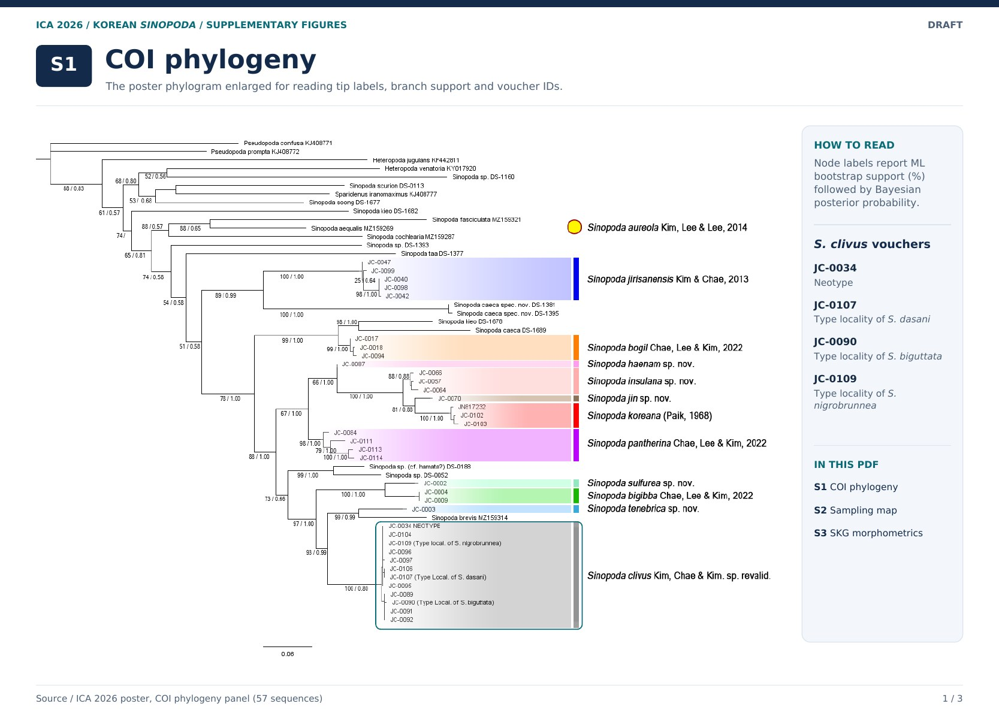
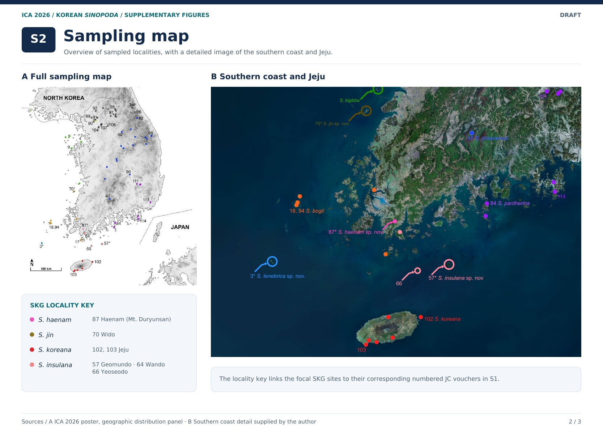
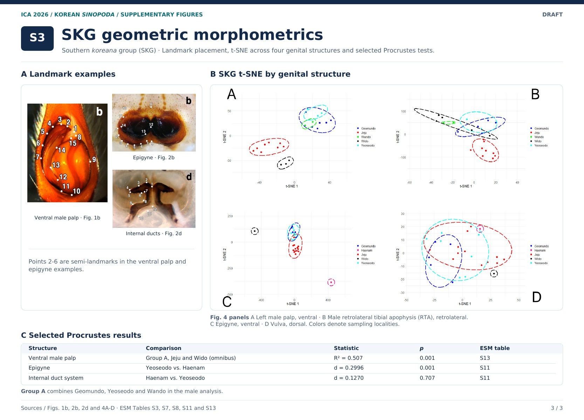

S1 · COI phylogeny
Branch support, taxon labels, and focal voucher IDs.
ICA 2026 poster supplement
Supplementary figures for the poster on COI phylogeny, sampling localities, and geometric morphometrics.

Branch support, taxon labels, and focal voucher IDs.

Sampling localities and a closer view of the southern coast and Jeju.

Genital landmark examples, four structure-specific t-SNE plots, and selected Procrustes results.